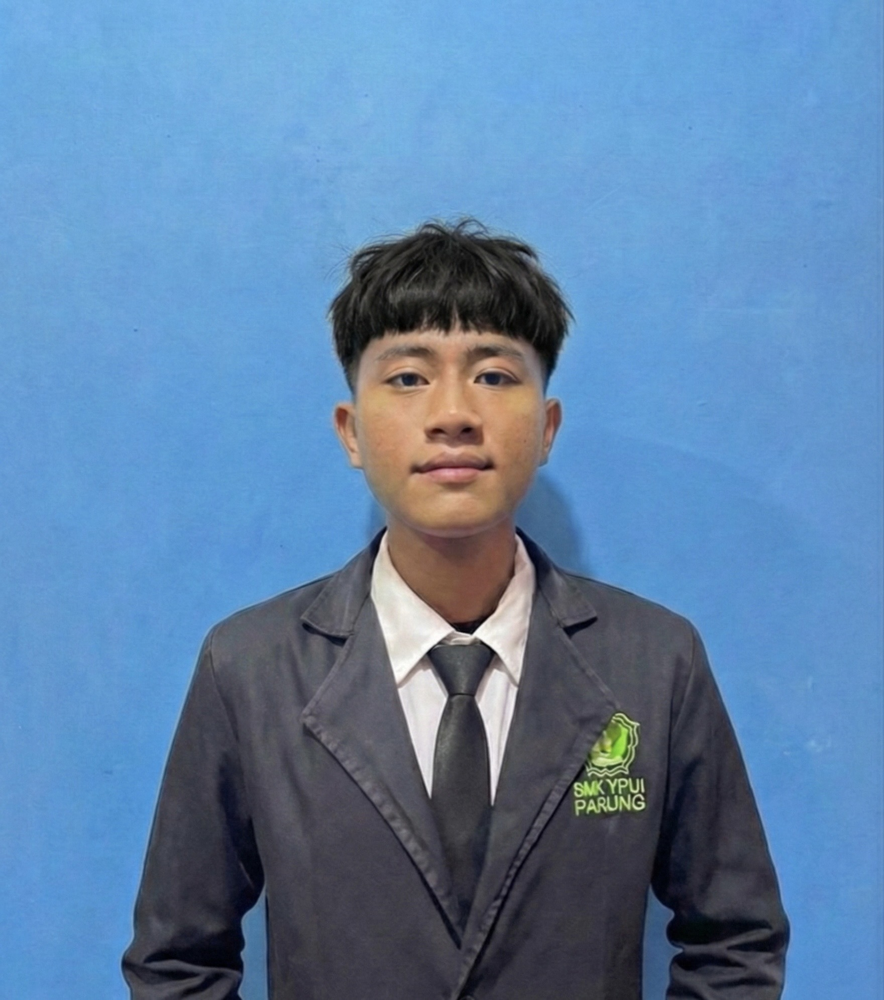
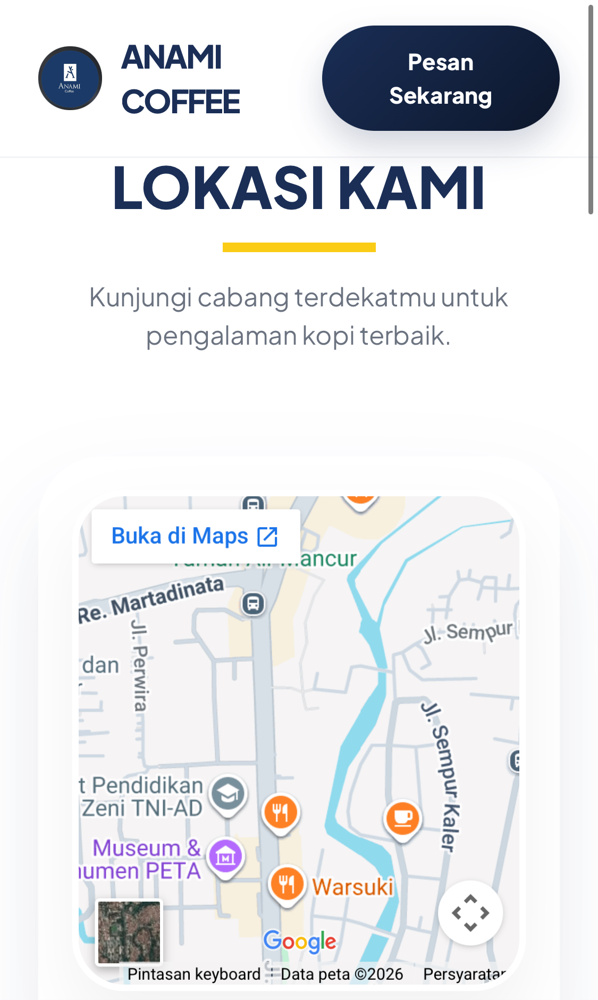

Siswa tingkat akhir SMK YPUI Parung yang berdedikasi pada bidang Networking, Cybersecurity, dan Pemrograman Web. Saya memiliki fashion dalam membangun infrastruktur jaringan yang stabil, menguji keamanan sistem, dan mengembangkan aplikasi web yang fungsional.
Lihat Proyek Saya
Saya adalah seorang profesional muda yang memiliki latar belakang kuat di bidang Teknik Komputer dan Jaringan. Saya memiliki pengalaman praktis dalam merancang topologi jaringan, mengonfigurasi perangkat keras, administrasi server Linux (Debian), serta merintis ekosistem digital bisnis dan memecahkan masalah sistem.
Menjalani Praktik Kerja Lapangan (PKL) di lingkungan pengembangan perangkat lunak profesional, menyusun laporan teknis operasional, dan belajar berkolaborasi dalam tim teknis.
Digitalisasi pendataan kehadiran siswa menggunakan pemindaian QR Code yang terintegrasi dengan database real-time.

Website katalog kopi dengan desain modern, fitur daftar menu, dan layout yang sepenuhnya responsif di semua perangkat.
Undangan digital elegan dengan fitur navigasi lokasi, galeri foto, dan desain yang mengutamakan kenyamanan pengguna (UX).
Memiliki pengalaman praktis dalam merancang topologi jaringan dan mengonfigurasi Routing & Switching menggunakan perangkat Cisco. Mampu melakukan instalasi dan administrasi layanan jaringan pada server Linux (Debian). Lulus UKK.
Tertarik untuk berkolaborasi atau memiliki pertanyaan? Jangan ragu untuk menghubungi saya di Parung, Bogor.